The following aspects of the ColorPickerUIAdv have been discussed in this section.
The default color groups available for ColorPickerUIAdv control are listed in the below table.
|
ColorPickerUIAdv Color Groups |
Description |
|
RecentGroup |
Represents the group of recent colors.
|
|
StandardGroup |
Represents the group of standard colors. |
|
ThemeGroup |
Represents the group of theme colors. |
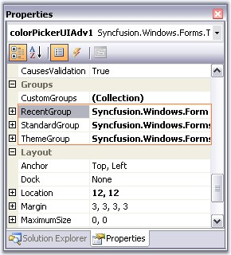
Figure 311: Color Groups for ColorPickerUIAdv Control
 Note: You can also add custom ColorGroups
apart from the above default groups. Refer Custom ColorGroups topic to know
more.
Note: You can also add custom ColorGroups
apart from the above default groups. Refer Custom ColorGroups topic to know
more.
Sections of Color Groups
The sections of a color group is illustrated in the below image.
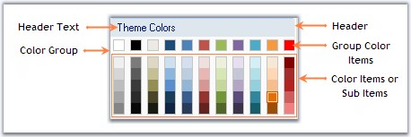
Figure 312: Sections of Color Groups
See Also
Custom Color Groups, Customizing the Color Groups
3.3.4.5.3.1.1 Custom Color Groups
Custom Color Groups can be added to ColorPickerUIAdv control using CustomGroups property. This property invokes ColorUIAdvGroup Collection Editor and lets you to add custom user groups.
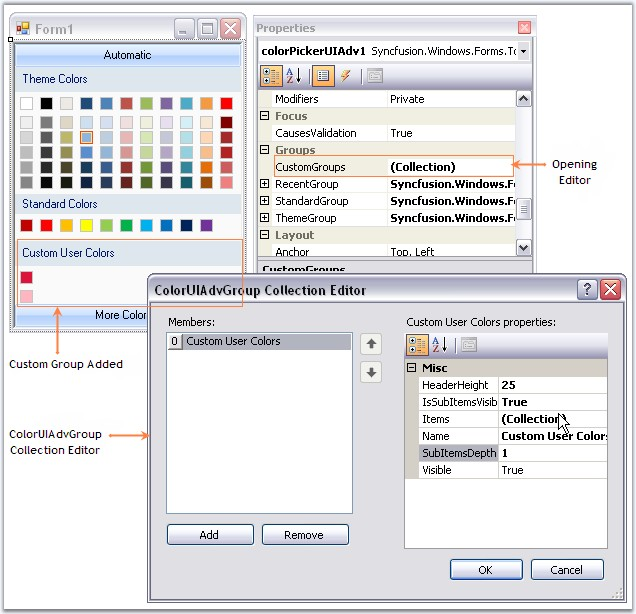
Figure 313: Custom ColorGroup added Through Designer
|
[C#]
Syncfusion.Windows.Forms.Tools.GroupColorItem groupColorItem1 = new Syncfusion.Windows.Forms.Tools.GroupColorItem(colorUIAdvGroup1, System.Drawing.Color.Crimson); groupColorItem1.Color = System.Drawing.Color.Crimson; groupColorItem1.Index = 0; groupColorItem1.SubItems.Add(new Syncfusion.Windows.Forms.Tools.ColorItem(groupColorItem1, System.Drawing.Color.LightPink)); colorUIAdvGroup1.Items.Add(groupColorItem1); colorUIAdvGroup1.Name = "Custom User Colors"; colorUIAdvGroup1.SubItemsDepth = 1; this.colorPickerUIAdv1.CustomGroups.Add(colorUIAdvGroup1); |
|
[VB.NET]
Dim groupColorItem1 As New Syncfusion.Windows.Forms.Tools.GroupColorItem(colorUIAdvGroup1, System.Drawing.Color.Crimson) groupColorItem1.Color = System.Drawing.Color.Crimson groupColorItem1.Index = 0 groupColorItem1.SubItems.Add(New Syncfusion.Windows.Forms.Tools.ColorItem(groupColorItem1, System.Drawing.Color.LightPink)) colorUIAdvGroup1.Items.Add(groupColorItem1) colorUIAdvGroup1.Name = "Custom User Colors" colorUIAdvGroup1.SubItemsDepth = 1 Me.colorPickerUIAdv1.CustomGroups.Add(colorUIAdvGroup1) |
Figure 314: Custom ColorGroup= "Custom User Colors"
Note: The properties to customize the color
groups are similar to default color groups. See how to Customize the Color
Groups in Customizing the Color Groups topic.
3.3.4.5.3.1.2 Customizing the Color Groups
This section discusses the properties in the below topics, which customizes the color groups.
3.3.4.5.3.1.2.1 Adding Color Items and sub items to Color Groups
The below properties lets you add color items and sub items.
|
ColorPickerUIAdv Properties |
Description |
|
Items |
This property invokes a ColorItem Collection Editor, which lets you add the colors to the group. You can also add sub items to this particular color item using another ColorItem Collection Editor which is invoked using SubItems property. |
|
IsSubItemsVisible |
Specifies if sub items should be visible. |
|
SubItemsDepth |
Specifies the depth of the sub items, i.e the number of sub items that can be added to a color item. |
· Opening ColorItem Collection Editor using Items property.
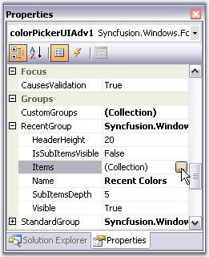
Figure 315: Accessing ColorItem Collection Editor Through Property Grid
· Adding GroupColor items.
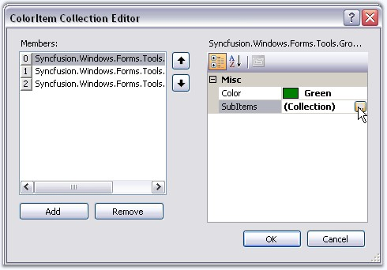
Figure 316: Accessing ColorItem Collection Editor using SubItems Property
· Adding color / sub items to the GroupColor items.
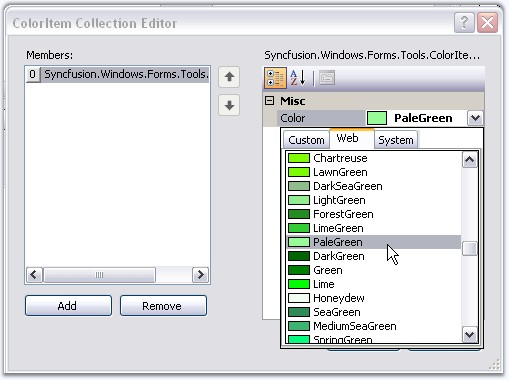
Figure 317: Selecting SubItem Color
|
[C#]
this.colorPickerUIAdv1.RecentGroup.Items.Add(groupColorItem0); this.colorPickerUIAdv1.RecentGroup.IsSubItemsVisible = true; this.colorPickerUIAdv1.RecentGroup.SubItemsDepth = 1; |
|
[VB.NET]
Me.colorPickerUIAdv1.RecentGroup.Items.Add(groupColorItem0) Me.colorPickerUIAdv1.RecentGroup.IsSubItemsVisible = True Me.colorPickerUIAdv1.RecentGroup.SubItemsDepth = 1 |
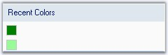
Figure 318: GroupColor Item and a Sub Item added to Recent Color Group
Note: To know how to customize a color
item, refer Color Items topic.
Customizing Color Items
Size of the color items can be set through ColorItemSize property. Default width is 13 and height is 13.
Note: The colors within the groups are
clickable at design time and you can change the color using property grid as in
the below image.
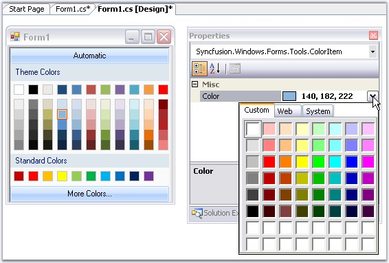
Figure 319: Changing the Color using PropertyGrid
|
[C#]
this.colorPickerUIAdv1.ColorItemSize = new System.Drawing.Size(20, 20); |
|
[VB.NET]
Me.colorPickerUIAdv1.ColorItemSize = New System.Drawing.Size(20, 20) |
Figure 320: ColorItemSize = 20X20
Spacing Between Color Items
HorizontalItemsSpacing and VerticalItemsSpacing properties of ColorPickerUIAdv control can be used to set the horizontal and vertical spacing between the color items respectively. Default value of these properties are 4 and 0 respectively.
|
[C#]
this.colorPickerUIAdv1.HorizontalItemsSpacing = 15; this.colorPickerUIAdv1.VerticalItemsSpacing = 15; |
|
[VB.NET]
Me.colorPickerUIAdv1.HorizontalItemsSpacing = 15 Me.colorPickerUIAdv1.VerticalItemsSpacing = 15 |
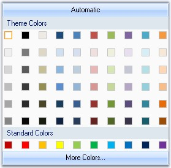
Figure 321: HorizontalSpacing and VerticalSpacing = 15
See Also
3.3.4.5.3.1.2.3 Header Settings
The below properties are used to change the default appearance of the color group headers.
|
Color Group Properties |
Description |
|
HeaderHeight |
Sets the height for the color group header. Default value is 20. |
|
Name |
Sets the name of the color group, i.e, the header text. |
|
ColorPickerUIAdv Property |
Description |
|
TextAlignment |
Sets the header text alignment of all the color groups. By default it is set to MiddleLeft. |
|
Font |
Sets the font for the header text. |
|
[C#]
//Sets header height for Theme group this.colorPickerUIAdv1.ThemeGroup.HeaderHeight = 25; //Sets header text for Theme group this.colorPickerUIAdv1.ThemeGroup.Name = "Recent Colors"; //Sets text alignment of the color group headers this.colorPickerUIAdv1.TextAlign = System.Drawing.ContentAlignment.MiddleCenter; //Sets the font style for the header text this.colorPickerUIAdv1.Font = new System.Drawing.Font("Microsoft Sans Serif",9F, System.Drawing.FontStyle.Bold); |
|
[VB.NET]
'Sets header height for Theme group Me.colorPickerUIAdv1.ThemeGroup.HeaderHeight = 25 'Sets header text for Theme group Me.colorPickerUIAdv1.ThemeGroup.Name = "Recent Colors" 'Sets text alignment of the color group headers Me.colorPickerUIAdv1.TextAlign = System.Drawing.ContentAlignment.MiddleCenter 'Sets the font style for the header text Me.colorPickerUIAdv1.Font = New System.Drawing.Font("Microsoft Sans Serif",9F, System.Drawing.FontStyle.Bold) |
Figure 322: ColorGroup Header with above Settings
This section covers the below topics:
Border for ColorPickerUIAdv control can be Fixed Single, Fixed3D or None, which is set using BorderStyle property. By default the border style is None.
|
[C#]
this.colorPickerUIAdv1.BorderStyle = System.Windows.Forms.BorderStyle.Fixed3D; |
|
[VB.NET]
Me.colorPickerUIAdv1.BorderStyle = System.Windows.Forms.BorderStyle.Fixed3D |
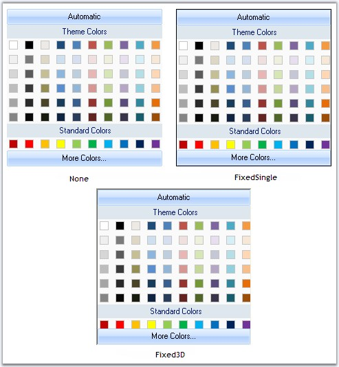
Figure 323: BorderStyles for ColorPickerUIAdv
See Also
The appearance and behavior settings, available for the ColorPickerUIAdv are discussed in this section.
By default ColorPickerUIAdv control has Office2007 look and feel.
|
ColorPickerUIAdv Properties |
Description |
|
UseOffice2007Style |
Office 2007 style can be enabled or disabled using this property. By default it is true. |
|
Office2007Theme |
Sets the color scheme for the Office2007 Style. |
|
[C#]
colorPickerUIAdv1.UseOffice2007Style = true;
//Sets Office2007 Black color Theme colorPickerUIAdv1.Office2007Theme = Syncfusion.Windows.Forms.Office2007Theme.Black; |
|
[VB.NET]
colorPickerUIAdv1.UseOffice2007Style = True
'Sets Office2007 Black color Theme Private colorPickerUIAdv1.Office2007Theme = Syncfusion.Windows.Forms.Office2007Theme.Black |
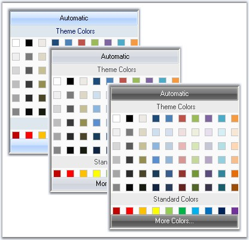
Figure 324: Blue, Silver and Black Color schemes of ColorPickerUIAdv
The Office2007 Visual Styles can be turned off by setting the UseOffice2007Style property to false.
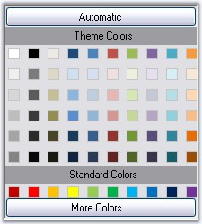
Figure 325: ColorPickerUIAdv with Office2007 Style Turned Off
Custom Colors
We can also apply custom colors to the ColorPickerUIAdv control by setting Office2007Theme to "Managed" and specifying the custom color through the ApplyManagedColors method as follows.
|
[C#]
this.colorPickerUIAdv1.Office2007Theme = Syncfusion.Windows.Forms.Office2007Theme.Managed; Office2007Colors.ApplyManagedColors(this, Color.Orange); |
|
[VB.NET]
Me.colorPickerUIAdv1.Office2007Theme = Syncfusion.Windows.Forms.Office2007Theme.Managed; Office2007Colors.ApplyManagedColors(Me, Color.Orange) |
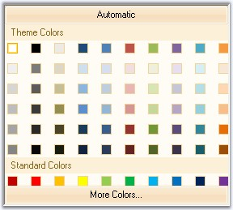
Figure 326: Custom Color = "Orange"
The ColorPickerUIAdv control at run time provides a Color dialog, using which we can select and add colors to the color groups.
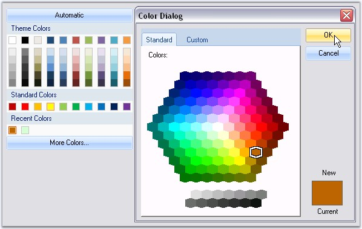
Figure 327: Adding Color Through Color Dialog at Run Time
Color Selection at run time
Automatic color that has to be selected, when Automatic button is clicked at run time, is set through AutomaticColor property. Default color is black.
|
[C#]
this.colorPickerUIAdv1.AutomaticColor = System.Drawing.Color.OrangeRed; |
|
[VB.NET]
Me.colorPickerUIAdv1.AutomaticColor = System.Drawing.Color.OrangeRed |
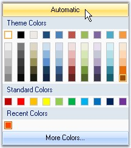
Figure 328: AutomaticColor = "OrangeRed"
Note: Height of this Automatic button can
be specified in ColorPickerUIAdv.ButtonHeight property. Default value is
23.